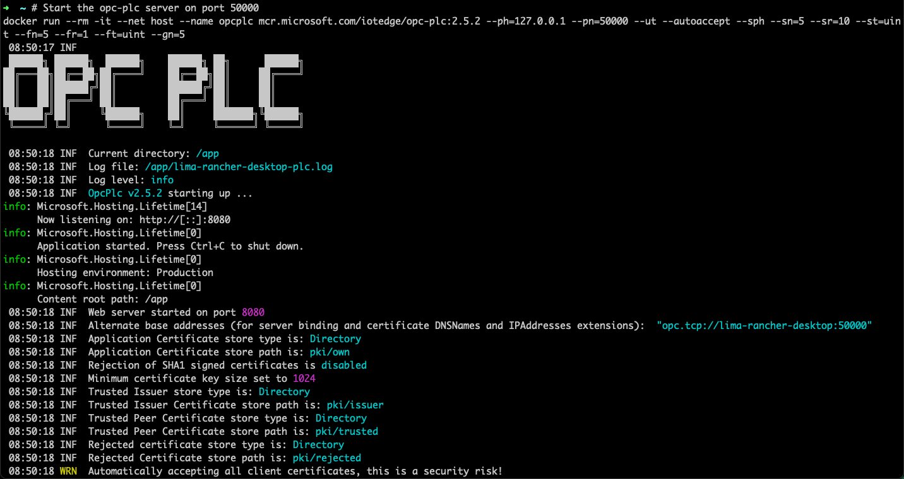
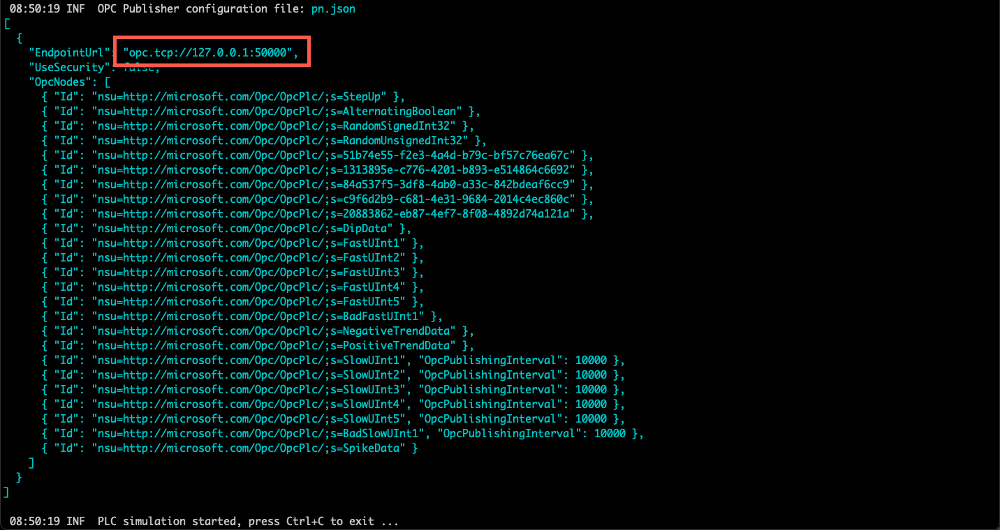

Objectives
In this Exercise you will learn how to:
- Install the OPC UA simulator
Before you begin:
This Exercise requires that you have:
- completed the pre-requisites required for all labs
The simulator in this exercice is a PLC OPC UA simulator with dynamic data tags: Microsoft OPC UA PLC
Running the OPC UA Server
Open a terminal window (Mac/Linux) or Command window (Windows) and enter the following command:
docker run --rm -it --net host --name opcplc mcr.microsoft.com/iotedge/opc-plc:2.5.2 --ph=127.0.0.1 --pn=50000 --ut --autoaccept --sph --sn=5 --sr=10 --st=uint --fn=5 --fr=1 --ft=uint --gn=5

Wait until the initialization has been complete: 
You should now see the URL of the Endpoint: opc.tcp://127.0.0.1:50000 - which will be used later in the lab.
Note
Info on the different options for the command can be found here The added command options compared to the suggested one provided in the page are:
- Be absolutely sure to use version 2.5.2 of the simulator - if you use any later version you’ll get close to 4000 tags instead of just 27
-
--ut: To enable unsecure transport, so that there is the possibility to establish connection without certificates and user authentication -
--ph=<path>: The fully-qualified hostname of the PLC - in our case127.0.0.1. -
--pn=<port number>: The server port of the OPC server endpoint - in our case50000.
Verifying the OPC UA Server is running
This part of the exercise is optional.
If you want to verify that the OPC UA server is running there are several options. The Prosys OPC UA Browser is fairly easy to use and it is available for all major operating systems (Windows, Linux, macOS).
The OPC UA Browser is free, but you are required to click the Request Download and provide your contact information in return for downloading it.
Install and open the application, then enter the URL of the Endpoint: opc.tcp://127.0.0.1:50000
Select the RandomSignedInt32 basic telemetry and you can see a Value attribute:
 Click on the
Click on the Refresh Attributes and verify that the Value changes for each click.
Congratulations you have successfully setup the simulator environment.